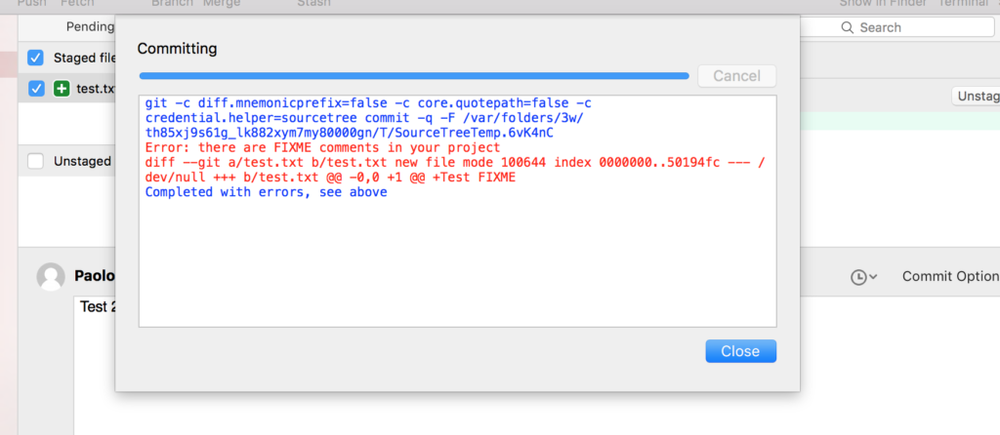

Default hooks path
<your-git-project>/.git/hooks/
My pre-commit script
(<your-git-project>/.git/hooks/pre-commit)
#!/bin/sh
if git rev-parse --verify HEAD >/dev/null 2>&1
then
against=HEAD
else
# Initial commit: diff against an empty tree object
against=4b825dc642cb6eb9a060e54bf8d69288fbee4904
fi
# Pattern to search
marker="FIXME"
exec 1>&2
if test $(git diff --cached -z $against | grep $marker | wc -c) != 0
then
echo 'Error: there are FIXME comments in your project'
echo `git diff --cached -z $against -G $marker`
exit 1
fi
Output from Bash
paolo@orgyen:~/Documents/dev/mygit
$ git commit -m "Test 2"
Error: there are FIXME comments in your project
diff --git a/test.txt b/test.txt new file mode 100644 index 0000000..50194fc --- /dev/null +++ b/test.txt @@ -0,0 +1 @@ +Test FIXME
Output from SourceTree

Reference